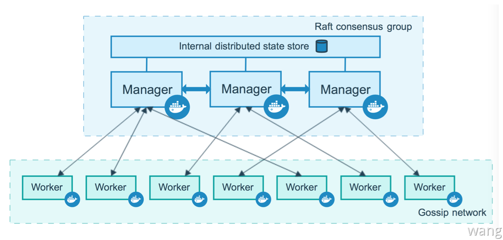
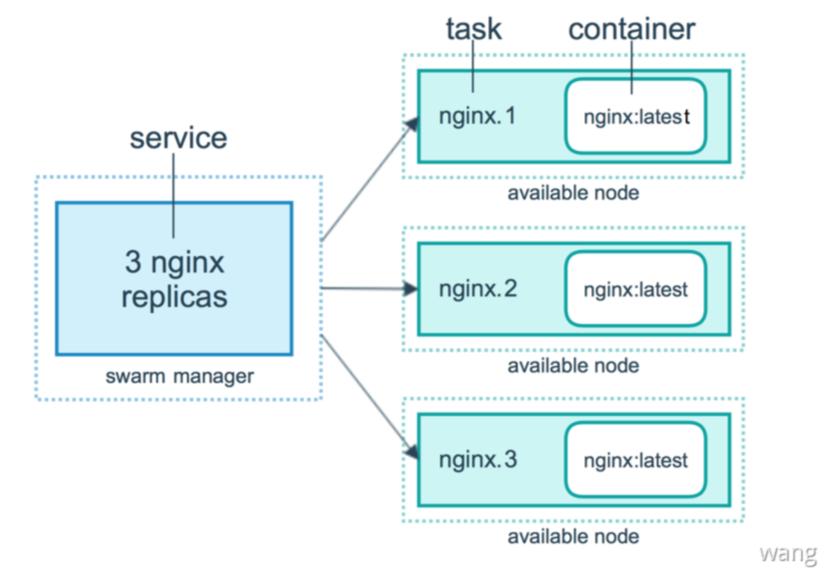
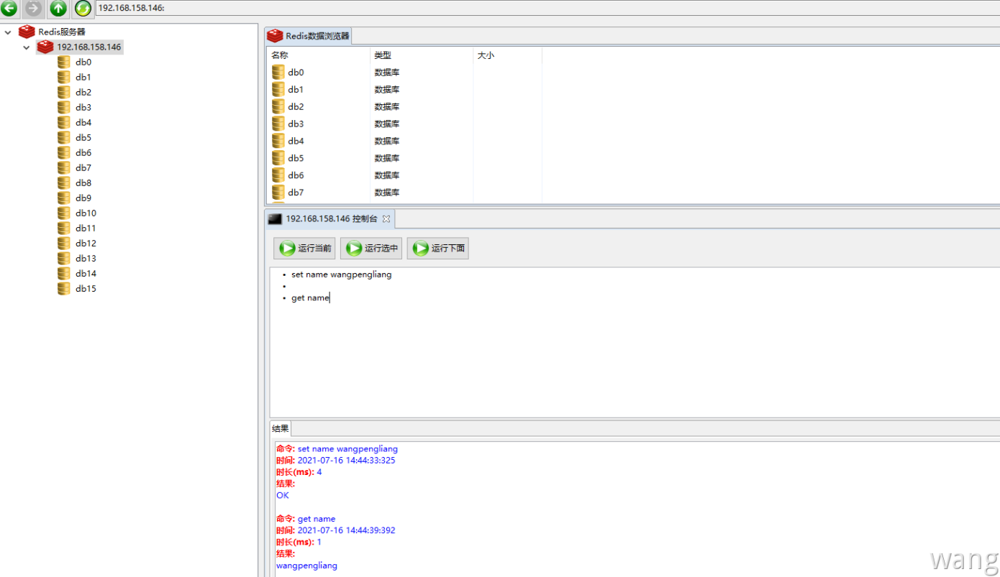
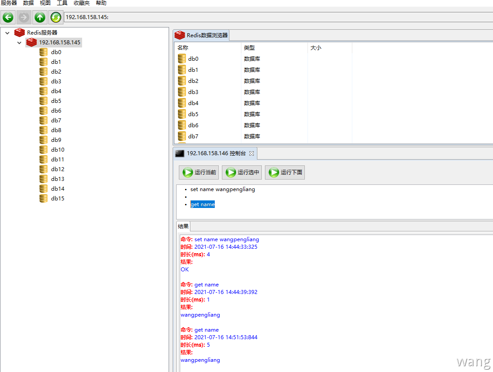
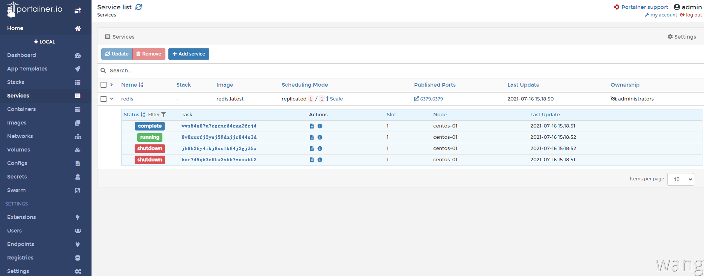

背景介绍
standalone 部署模式故障转移机制：独立部署 Redis ，借助 docker swarm 故障转移机制做到基本HA，多节点的Redis通过 NFS 实现容器数据共享。
环境准备
独立的 NFS 服务器
| 192.168.158.143 | 部署NFS服务 |
|---|
Swarm 集群由 管理节点 和 工作节点 组成。这里创建一个包含一个管理节点和两个工作节点的最小 Swarm 集群
| IP | IsManager |
|---|---|
| 192.168.158.144 | Yes |
| 192.168.158.145 | |
| 192.168.158.146 |
Docker Swarm
Docker Swarm 是 Docker 官方三剑客项目之一，提供 Docker 容器集群服务，是 Docker 官方对容器云生态进行支持的核心方案。使用它可以将多个 Docker 主机封装为单个大型的虚拟 Docker 主机，快速打造一套容器云平台。
注意：Docker 1.12.0+ Swarm mode 已经内嵌入 Docker 引擎，成为了 docker 子命令
docker swarm，Docker 引擎 API 已经删除 Docker Swarm
Swarm mode 内置 kv 存储功能，提供了众多新特性，比如：具有容错能力的去中心化设计、内置服务发现、负载均衡、路由网格、动态伸缩、滚动更新、安全传输等。
Swarm 是使用 [SwarmKit](https://github.com/docker/swarmkit/) 构建的 Docker 引擎内置（原生）的集群管理和编排工具。使用 Swarm 集群之前需要了解以下几个概念。
节点
运行 Docker 的主机可以主动初始化一个 Swarm 集群或者加入一个已存在的 Swarm 集群，这样这个运行 Docker 的主机就成为一个 Swarm 集群的节点 (node) 。节点分为管理 (manager) 节点和工作 (worker) 节点。管理节点用于 Swarm 集群的管理，docker swarm 命令基本只能在管理节点执行（节点退出集群命令 docker swarm leave 可以在工作节点执行）。一个 Swarm 集群可以有多个管理节点，但只有一个管理节点可以成为 leader，leader 通过 raft 协议实现。工作节点是任务执行节点，管理节点将服务 (service) 下发至工作节点执行。管理节点默认也作为工作节点。也可以通过配置让服务只运行在管理节点。
集群中管理节点与工作节点的关系

服务和任务
任务 （Task）是 Swarm 中的最小的调度单位，目前来说就是一个单一的容器。服务 （Services） 是指一组任务的集合，服务定义了任务的属性。服务有两种模式：
replicated services按照一定规则在各个工作节点上运行指定个数的任务global services每个工作节点上运行一个任务
两种模式通过 docker service create 的 --mode 参数指定。
容器/任务/服务的关系

NFS服务搭建
服务端： 192.168.158.143安装 nfs-server
1 | yum -y install rpcbind nfs-utils |
客户端 ：192.168.158.145/192.168.158.146 安装 nfs-utils，这里管理节点 192.168.158.144 并不打算部署服务故不需要安装nfs-utils
1 | yum -y install nfs-utils |
创建共享目录
1 | //服务端 |
服务端NFS配置
1 | vim /etc/exports |
1 | /mnt/nfs_file/ 192.168.158.143/24(rw,sync,no_root_squash) |
1 | [root@centos-01 ~]# vi /etc/exports |
配置生效
1 | [root@centos-01 ~]# exportfs -rv |
客户端NFS配置
关联服务器
1 | mount -t nfs 192.168.158.143:/mnt/nfs_file /mnt/nfs_file |
1 | //挂载测试 |
备注：出现 clnt_create:RPC:Port mapper failure - Unable to receive:error 113(NO route to host) 报错时，需要关闭服务端与客户端之间的防火墙，或者开放NFS使用的2049端口。
1 | systemctl stop firewalld |
Docker集群搭建
创建集群
管理节点：192.168.158.144
1 | [root@centos-01 ~]# docker swarm init |
工作节点1：192.168.158.145
1 | [root@centos-01 ~]# docker swarm join --token SWMTKN-1-4fixdycxiue0273gkral83cn9bgqvkct13r9fo1k01iy6oaadm-e3rd668t3ww1b2w3e0xfxi8yo 192.168.158.144:2377 |
工作节点2：192.168.158.146
1 | [root@centos-01 ~]# docker swarm join --token SWMTKN-1-4fixdycxiue0273gkral83cn9bgqvkct13r9fo1k01iy6oaadm-e3rd668t3ww1b2w3e0xfxi8yo 192.168.158.144:2377 |
更改节点可用性
1 | [root@centos-01 ~]# docker node ls |
查看集群状态
192.168.158.144
1 | [root@centos-01 ~]# docker node ls |
解散集群
1 | docker swarm leave # 工作节点：主动离开集群，让节点处于down状态，才能删除 |
Redis部署
standalone 部署模式区别于传统 Redis Cluster 部署，首先需要借助 NFS 实现多主机 Redis配置和持久化数据共享 借助 Docker Swarm 的故障转移机制来达到 基本的HA。
Redis配置共享
1 | [root@centos-01 ~]# cd /mnt/nfs_file/redis/ |
备注：
redis.conf需要关闭Cluster-Enable
Redis服务部署
1 | [root@centos-01 ~]# docker service create -p 6379:6379 --name redis --mount type=bind,src=/mnt/nfs_file/redis/redis.conf,dst=/etc/redis/redis.conf --mount type=bind,src=/mnt/nfs_file/redis,dst=/data redis redis-server /etc/redis/redis.conf --appendonly yes |
Docker Swarm 会随机选择一个工作节点（这里是 192.168.158.145 ）部署 一个Redis容器。
查看运行服务
1 | [root@centos-01 ~]# docker service ls |
查看服务详情
1 | [root@centos-01 ~]# docker service ps redis |
查看服务日志
1 | [root@centos-01 ~]# docker service logs redis |
这里保证只有一个 Redis 容器运行（standalone 部署）,所以不需要使用 --replicas number 。 关于服务动态伸缩/服务更新与回滚/滚动更新等相关知识参考：https://www.bookstack.cn/read/docker_practice-v1.1.0/swarm_mode-README.md。
删除服务
1 | docker service rm redis |
测试
基本功能测试
使用 RedisClient 连接Redis 192.168.158.146

故障转移测试
这里手动将 192.168.158.146 Redis容器停止，查看Swarm会怎么处理
1 | [root@centos-01 ~]# docker ps -a |
发现 192.168.158.145 上启动了一个新的Redis容器
1 | [root@centos-01 ~]# docker ps -a |
管理节点中查看服务运行情况
1 | [root@centos-01 ~]# docker service ps redis |
发现 Redis 已经被转移到了192.168.158.145 使用 RedisClient 连接192.168.158.145 使用 get name 发现可以找到数据，说明Redis容器的数据共享是没问题的。一旦某个节点挂掉，Swarm会自动转移到其他可用的工作节点，结合NFS的文件共享就可以实现Redis独立部署但拥有基本的HA。

Portainer可视化
在 192.168.158.1434 管理节点上运行 Portainer 容器。
